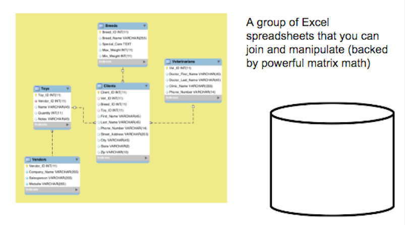

Intro To SQL
How do I get to all that cool data anyway?
Welcome!
Girl Develop It is here to provide affordable and accessible programs to learn software through mentorship and hands-on instruction.
Some "rules"
- We are here for you!
- Every question is important
- Help each other
- Have fun
Tell Us About Yourself
- Who are you? (+ experience with SQL)
- What do you hope to get out of the class?
- What is your favorite movie, and how many times have you watched it?
We're going to make a table out of this info in part 2, and the data will live here: http://bit.ly/SQLTable
About Me
- Analyst working with big data
- 6+ years of experience with SQL
- Favorite movie is Beauty and the Beast, watched 25 times. (and that was just yesterday)

What to expect from the class
- This is a complement to the database design class
- We'll be using the same terminology and building on those concepts
- But we'll be hands-on

By the end of the class, you will be able to query and modify a SQL table to make sense of the data you have in a relational way.
Plan for the day: CRUD
Morning (10-12): cRud
- What's a database? What's SQL?
- How to query a database:
- Select statement (from statement)
- Select, Distinct
- Count
- Group By, Order By
- Clauses
- Where
- Like
- Joins(Inner/Outer Left/Right)
- Practice
Plan for the day: CRUD
Afternoon (12:30ish - 3): CrUD
- Super-awesome bonus round:
- Subqueries
- Practice
- How to modify a database
- Creating a table
- Udating a table with rows
- Deleting Rows
- v.s. deleting tables
- Optomizing queries
- Resoures and links
- Practice
- GDI Survey
What's a relational database?
A virtual organized file cabinet that makes data available to people and computers across the organization.

The language of relational databases
- Database: A group of data organized in a logical way(Excel workbook)
- Schema: Layout of the database, sometimes interchangeable with database (Excel workbook + name of workbook)
- Table: A subset of a database (Excel worksheet)
- Rows (records) and columns (fields): Parts of a table
- CRUD (Create, Read, Update, Delete): How you change the databases and tables in the database
- Relational Data Model : Data related to each other are stored a certain way and “point” to each other (Like Excel cell references)
- Database keys (primary and foreign): The pointers in each table that can link to other tables
- Indexes: Make databases easier to search
- RDBMS systems: Types of relational databases that have all the properties of relational data models: MySQL, Oracle, Access, Postgres
- Queries: How to ask questions of the tables and databases
Databases, schemas, and tables
DB Schema→ Table → Row → Value

Excel File → Workbook → Row → Cell
What does a relational database look like?
What's SQL?
- select user_name, sum(total_purchases)
- from billing_database.user_table
- where user_name like 'Henderson%'
- and billing_month = 'January'
- group by user_name;
- It's the language that the database speaks to bring you back data
- Has a lot of words similar to English, but they have their own meaning as key words
- Like Siri or Google Glass
Different Flavors of SQL
- How do you say that you want a can of Coca-Cola?
- Coke, soda or pop?
- How do you write SQL?
| Oracle | MySQL |
| SQL Server | Postgres |
| Access | Sybase |
| DB2 |
All different flavors of the same language
Databases, schemas, and tables

- Reading tables other people wrote
- Modifying those tables to add your own information/ creating your own tables to read from CSV files, other SQL tables, and other systems.
Databases and CRUD
- Create INSERT, CREATE
- Adding rows to your table
- Read SELECT
- Picking specific information from your table
- Update UPDATE, ALTER
- Picking specific information from your table
- Delete DELETE, DROP, TRUNCATE
- Erase your data
What can you do with SQL?
The power is in the relationship between data sets.
- How many customers do we have in Los Angeles?
- What's that person’s Facebook and Twitter handle?
- Did profits go up or down this quarter?
- How many users are clicking on our new site?
Three parts of SQL
SQL clauses: required order
| PROC SQL; | starts procedure |
| 1 SELECT | selects variables |
| 2 FROM | opens datasets |
| 3 WHERE | restricts observations |
| 4 GROUP BY | groups observations |
| 5 HAVING | restricts groups |
| 6 ORDER BY | sorts results |
| QUIT; | ends procedure |
From: http://blogs.sas.com/
Lets develop it!
Fantastic Ordered List
- One is smaller than...
- Two is smaller than...
- Three!
Speaker View
There's a speaker view. It includes a timer, preview of the upcoming slide as well as your speaker notes.
Press the S key to try it out.
P.S. This won't work when running the slides locally unless you run reveal.js runs from a local web server.
But wait! We teach code
For HTML -- Surround your code with a div class "xml", then pre, then code.
<ul>
<li>No order here</li>
<li>Or here</li>
<li>Or here</li>
<li>Or here</li>
</ul>
But wait! We teach code
We can also make code editable
<ul>
<li>No order here</li>
<li>Or here</li>
<li>Or here</li>
<li>Or here</li>
</ul>
But wait! We teach code
CSS
body{
background-color: #ffffff;
}
But wait! We teach code
Javascript
function helloWorld(){
var name = 'GDI';
alert("Hi, " + name)
}
But wait! We teach code
PHP
function helloWorld(){
$name = 'GDI';
echo "Hi, " . $name;
}
But wait! We teach code
Ruby
def hello_world
@name = 'GDI'
puts "Hi, #{@name}"
end
But wait! We teach code
Python
def hello_world():
name = "GDI"
print 'Hi, ' + name
return
But wait! We teach code
Java
public void helloWorld(){
String name = "GDI";
System.out.println("Hi," + name)
}
Fragmented Views
Hit the next arrow...
... to step through ...
any type- of view
- fragments
Fragment Styles
There's a few styles of fragments, like:
grow
shrink
roll-in
fade-out
highlight-red
highlight-green
highlight-blue
Vertical Slides
Slides can be nested inside of other slides, try pressing down.
Basement Level 1
Press down or up to navigate.
Basement Level 2
Basement Level 3
That's it, time to go back up.
Point of View
Press ESC to enter the slide overview. Hold down alt and click on any element to zoom in on it using zoom.js. Alt + click anywhere to zoom back out.
rvl.io
You know, we are nerds after all and will probably get a kick out of all of this HTML. BUT, if you really don't like writing slides in HTML you can use the online editor rvl.io.
Transition Styles
You can select from different transitions, like:
Cube -
Page -
Concave -
Zoom -
Linear -
None -
Default
Themes
Reveal.js comes with a few themes built in:
GDI Cool -
GDI Light -
GDI Sunny -
Default
* Theme demos are loaded after the presentation which leads to flicker. In production you should load your theme in the <head> using a <link>.
Custom Events
Additionally custom events can be triggered on a per slide basis by binding to the data-state name.
Reveal.addEventListener( 'customevent', function() {
console.log( '"customevent" has fired' );
} );
Clever Quotes
These guys come in two forms, inline:
The nice thing about standards is that there are so many to choose from
and block:
For years there has been a theory that millions of monkeys typing at random on millions of typewriters would reproduce the entire works of Shakespeare. The Internet has proven this theory to be untrue.
Intergalactic Interconnections
You can link between slides internally, like this.
Take a Moment
Press b or period on your keyboard to enter the 'paused' mode. This mode is helpful when you want to take distracting slides off the screen during a presentation.
GDI Philly
Starter Slides
wifi: network
password: password
Early?
- any prep instructions
Welcome!
Girl Develop It is here to provide affordable and accessible programs to learn software through mentorship and hands-on instruction.
Some "rules"
- We are here for you!
- Every question is important
- Help each other
- Have fun
GDI Philly is now on Slack!
Slack is a free, chat and messaging system available as either a web or native application for your desktop or mobile device. All our welcome to join our Slack team, but we need to add you! For an invitation, sign up here.
Join #[slack-room-name] to slack about this class!
Introduce yourself
- Who are you?
- What do you hope to get out of this class?
- [Fun introductory question here. Make it inclusive!]
Let's Develop It
Task instructions might go here
BONUS: Finished early? Try this.
Code solution might go here
Stretch break!

Summary
- Intro
- Exercise
- Stretch break
- Wrap up
Homework (optional)
- Describe a next-level homework task for students to tackle
- Be sure to include solutions to this and all exercises, including bonus items.
Don't feel you need to finish this right away! Check into #[slack-room-name] for follow-up and questions.
What next?
- Suggested class sequences
- Valuable resources
- Other upcoming GDI classes/events
- Write about your class experience, and send us a link! We can share to the Philly community, and maybe GDI national.
Get Involved
- Join Slack community
- Teaching assist
- Teach something
- Mentor or be mentored
Survey
We value your feedback and are always trying to improve.